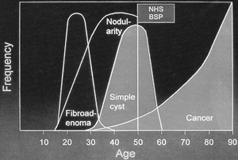
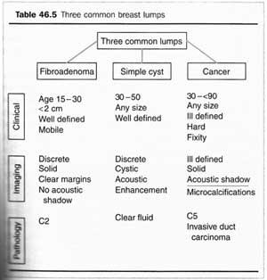

Breast Lump
DEFINITION
Discrete mass within the breast that may be benign, such as
associated with hormonal changes within the breast, or malignant.
D E A B M I M
EPIDEMIOLOGY
Nost breast
masses are benign in pre-menopausal years.

D E A B M I M
AETIOLOGY
Benign breast lumps
Fibroadenoma
Most common.
Formed from both fibrous and glandular tissue.
Peak age 20-30 years.
Lipomas
Fibrocystic
change
Intraductal papilloma.
Somewhere In-between
Phyllodes
Malignancy
Breast
cancer
D E A B M I M
BIOLOGICAL BEHAVIOUR
As per individual diseases
Palpable masses > 7mm can be reliably investigated by FNA and
core biopsy in the clinic
- cysts will resolve with aspiration
- if mass is too small then may need an excision biopsy
Non-palpable masses can be evalauted by radiologically-guided core
biopsy
- USS preferred
- if not visible on USS then need stereotactic (mammography-guided)
core biopsy
May need a needle-localized excisional breast biopsy if:
- deep in chest wall
- behind nipple
- small breast compressing to <3cm in thickness
What about vague densities not
easy to stick a needle in?
Repeat exam.
Persisting or increasing size --> consider incisional biopsy.
D E A B M I M
MANIFESTATIONS
Breast history & exam.
Fibrocystic
- vague thickening of rubbery
- ill defined mass
Fibroadenoma
- smooth margins
- highly mobile
Lipma
- smooth, soft, mobile
Cancer
- discrete solid mass
- irregular edges
D E A
B M
I M
INVESTIGATIONS
Triple assessment
1. Clinical history & examination
2. Mammography / USS
3. FNA
Histological examination
Core biopsy with core-cutting needles, often under radiological
guidance.

D E A
B M
I M
MANAGEMENT
As per individual diseases
D E A
B M
I M
REFERENCES
Sabiston 17th
B&L 23rd
Cameron 10th
Browse 4th